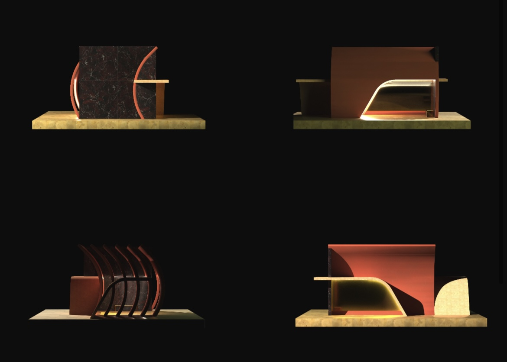

Third draft. The shared style for the site and Harvest, next to today, at actual size, in both themes, with Robert’s answers applied: one fixed grey, the site’s body at 12px, and the footer’s zigzag at half the x-height, in bold for keyboard focus. The prose is in STYLE-GUIDE.md.
Readable text needs 4.5:1 against its background; a line that shows where a field or a button is needs 3:1; decoration needs nothing. The numbers are measured live from the colours on screen.
LIGHT WORK's real copy, with the body at 12px. The title in ink and the detail lines at 11px in grey are still a proposal; UX-4 settles them. The footer keeps its size and spacing. Its grey is now readable, and the chosen label carries the zigzag. With the keyboard, the zigzag goes bold instead of an outline.
In 2021, I co-directed and curated an art show and fundraiser called Light Work, a group exhibition addressing physicality and shared physical space. It was one of Portland’s first arts events to follow the Covid-19 pandemic. Money was raised for Portland Public Schools and was made available for teachers to provide unique arts opportunities for underserved students.
ORGANIZERS
Sean Light
Owner, High Order Studio
⮡ Producer · Creative Direction · Exhibition Design

In 2021, I co-directed and curated an art show and fundraiser called Light Work, a group exhibition addressing physicality and shared physical space. It was one of Portland’s first arts events to follow the Covid-19 pandemic. Money was raised for Portland Public Schools and was made available for teachers to provide unique arts opportunities for underserved students.
ORGANIZERS
Sean Light
Owner, High Order Studio
⮡ Producer · Creative Direction · Exhibition Design
The caption line is BUS STOP's alt text standing in: no project has a caption yet. ⮡ is not in the typeface, so it falls back to another font on the live site too.
Today every control is the same small grey uppercase word. Proposed: three kinds of button for three kinds of job, readable sizes, and one place for each kind of control. This is a sketch of where things go, not the UX-2 design.
Hover changes tone only. Keyboard focus is a thin outline around the control, so the two can never be confused, except where the control already carries a line: a field thickens its line, and a footer label thickens its zigzag. Something selected is darker AND carries a mark: a line under a tab, a bar beside a row, a frame and a tick on a tile, a zigzag under a footer label. Disabled stays readable. Every cell here is also live; hover it or press Tab.
| Rest | Hover | Keyboard focus | Selected | Disabled | |
|---|---|---|---|---|---|
| Primary | — | ||||
| Secondary | — | ||||
| Quiet | — | ||||
| Tab or toggle | |||||
| List row | CANOPY12 | CANOPY12 | CANOPY12 | CANOPY12 | CANOPY12 |
| Footer label (site) | DESIGN | DESIGN | DESIGN | DESIGN | — |
| Field | — |
Nothing waiting for review.
New material arrives here after you look through a folder or a website for this project.
Saved on this Mac.Not on the site until you publish.
Publishing didn’t finish. Nothing was lost: BUS STOP and CANOPY are still saved on this Mac.
GitHub turned the change away because the site had newer changes.
Every Harvest control is at least 28px tall. On the site the tap areas stay as they are (the footer’s are 25px); “Tap areas” at the top shows them hatched.